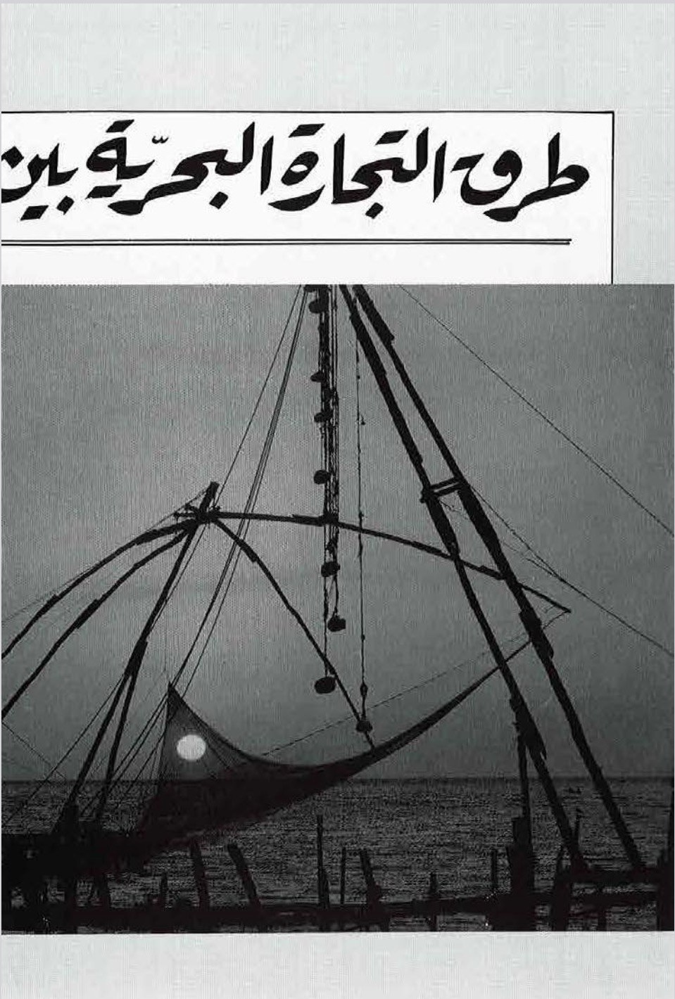
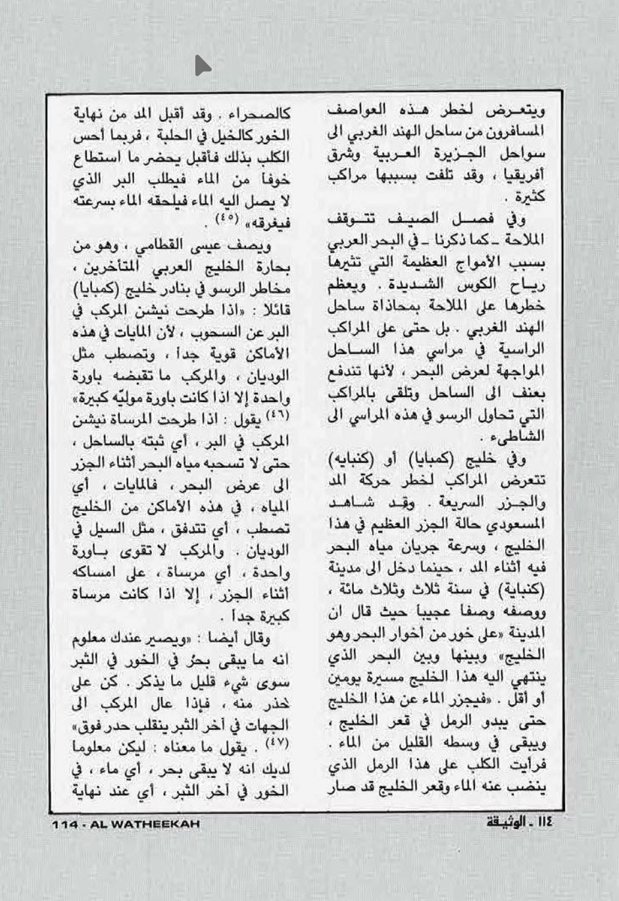
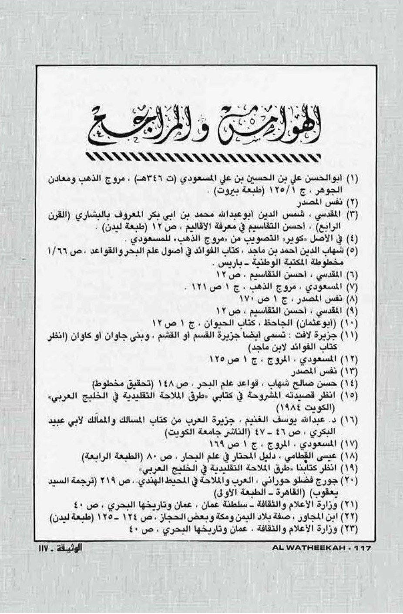
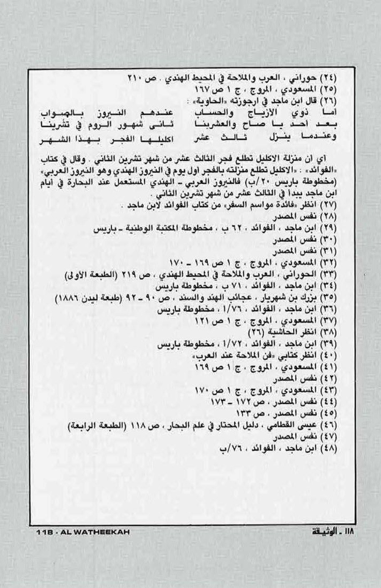

مقال في مجلة الوثيقة (البحرين)؛ لا يظهر العدد والسنة في الصفحات المرسلة · مقال في مجلة الوثيقة، «طرق التجارة البحرية بين ...»، ص ١١٤ و١١٧ و١١٨
عيسى القطامي في وصف مخاطر الرسو في خليج كمبايا، في مقال «طرق التجارة البحرية»
ما هي
مقال عن طرق التجارة البحرية القديمة في الخليج العربي والمحيط الهندي. وفي الصفحة ١١٤، بعد وصف المسعودي للمد والجزر في خليج كمبايا (كنبايه): «ويصف عيسى القطامي، وهو من بحارة الخليج العربي المتأخرين، مخاطر الرسو في بنادر خليج (كمبايا) قائلا: اذا طرحت نيشن المركب في البر عن السحوب، لأن المايات في هذه الأماكن قوية جدا، وتصطب مثل الوديان، والمركب ما تقبضه باورة واحدة إلا اذا كانت باورة مولية كبيرة»، وقوله أيضا: «ويصير عندك معلوم انه ما يبقى بحر في الخور في الثبر سوى شيء قليل ما يذكر، كن على حذر منه». وتحيل الحاشيتان ١٨ و٤٦ في الصفحتين ١١٧ و١١٨ إلى: عيسى القطامي، دليل المحتار في علم البحار، الطبعة الرابعة، ص ٨٠ و١١٨.
أهميتها
دراسة في الملاحة العربية تستشهد بدليل المحتار لعيسى بوصفه خبرة بحار عملي، إلى جانب المسعودي وابن ماجد.
صور الصفحات




المصادر
«طرق التجارة البحرية بين ...»، مجلة الوثيقة (البحرين)، ص ١١٤ و١١٧ و١١٨، نقلا عن عيسى القطامي، دليل المحتار في علم البحار، ط ٤، ص ٨٠ و١١٨
كيف كُتب هذا النص: لا يظهر العنوان كاملا ولا اسم الكاتب ولا العدد والسنة في الصفحات المرسلة. ويحيل الكاتب إلى كتابيه «طرق الملاحة التقليدية في الخليج العربي» (الكويت ١٩٨٤) و«فن الملاحة عند العرب».
افتح في الموقع التفاعلي